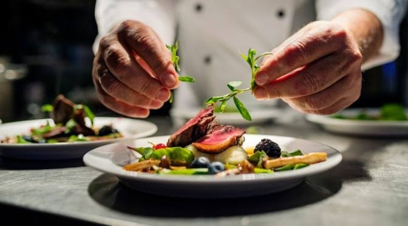
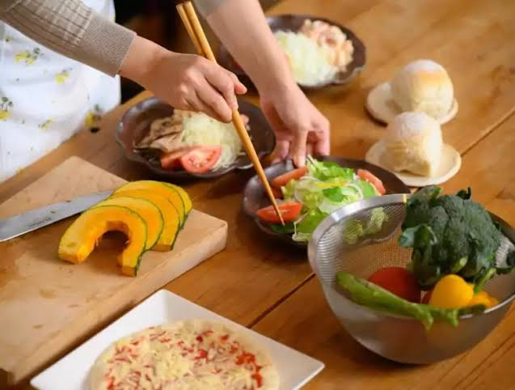

Blog SEO & Cảm hứng

Soundchef
Tối ưu hóa hình ảnh cho người khiếm thị
Đôi khi việc đơn giản như nấu ăn lại là thứ mà rất nhiều người muốn, để thư giãn và thể hiện tình cảm...
Đọc thêm
Ẩm thực
Tư duy logic trong nấu ăn
Nấu ăn cũng giống như viết code, mỗi nguyên liệu là một dòng lệnh, chỉ cần sai một chút "syntax" là món ăn sẽ khác ngay,cần phải biết quý trọng từng nguyên liệu và nấu bằng cả trái tim...
Đọc thêm